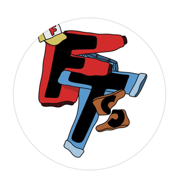
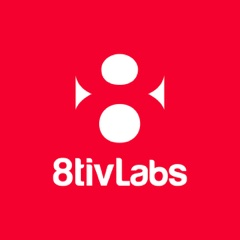

In development


Lids wanted a more authentic place in creator culture and a stronger presence on its YouTube page. Ads couldn't earn either one.
8tivLabs ran The Handoff, a fully organic campaign in the creator space, with the cap moving from one story to the next.
Subjects are seeded through the whole eight-week run, not batched into one shoot day. Credibility comes from real proximity to street and sports culture, not follower count. It's the same approach that worked on the Nike campaign.
Impressions are the primary KPI for every drop. Click-through is treated as upside, not a committed metric.
The Handoff also gives the channel new content. Shorts are the start, and long-form is the next leg.